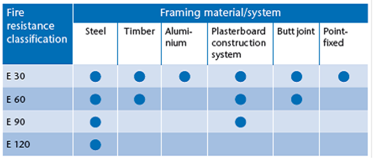

Glass Fire Doors & Fixed Windows
ROCKLITE® ‘S’ Hinged Glass Fire Doors & Fixed Windows
ROCKLITE® ‘S’ glass fire doors are easy to install. They are manufactured in a wide range of sizes to match existing applications. *ROCKLITE® ‘S’ fire doors are supplied with a purpose-made 3mm steel frame with a 20mm rebate including 2 bullet hinges per leaf. Frames are tubular frames and gets bolted onto existing wall openings.
- 6mm Schott PYRAN® S Borofloat Toughened Glass for a 120 minute fire rating is used in all our Glass Fire Doors. Between the Glass & Steel Glazing Beads we include Intumex® LPSK Intumescent Strips
- 6mm Toughened PYRAN® S Borofloat Glass - 30 to 120 minutes
PYRAN® S is a superior fire resistant glass with a fire rating of up to
120 minutes if used in conjunction with a steel frame or door leaf.
PYRAN® S is manufactured
using a micro-float process and outperforms soda lime glass. It allows for large formats and long
fire resistance times due to its special physical properties. Furthermore, NiS crystals cannot form
with Borosilicate glass. Borosilicate glass is the base material for the entire PYRAN® family of
fire resistant glazing products. The standard PYRAN® design consists of a monolithic borosilicate
glass, refined by thermal tempering and manufactured in a Microfloat facility, the only one of its
kind in the world. This unique combination of borosilicate glass and the float process results in a
specialized glass with outstanding characteristics.
Amongst the entire range of SCHOTT fire resistant products, PYRAN® S offers the greatest multi-functionality. PYRAN® S is a monolithic thermally tempered borosilicate safety glass according to DIN EN Standard 13024-1. PYRAN® S is a regulated building material and can be used for single or double glazing without conducting the heat soak test, giving it yet another advantage in terms of safety and dependability. Even when exposed to severe heat, PYRAN® S glass remains transparent, this ensures lifesaving viewing making it safer in the event of an emergency evacuation.
PYRAN® S characteristics include:
high transmission in the visible and ultraviolet spectral ranges
*brilliant optics, ensuring natural, pure colour reproduction
PYRAN® S demonstrates extreme durability against:
*aggressive environmental atmospheric attack
*exposure to UV radiation
*abrasive chemical solutions
Amongst the entire range of SCHOTT fire resistant products, PYRAN® S offers the greatest multi-functionality. PYRAN® S is a monolithic thermally tempered borosilicate safety glass according to DIN EN Standard 13024-1.
Fire Resistance Categories for Particular Protection Specifications:
According to EN Standard 13501-2, fire resistant glazing is classified
using the following combinations of letters and numbers:
*E: Provides a physical barrier against flames, hot gases and smoke.
*EI: Provides a physical barrier against flames, got gases and smoke as well as thermal
isolation.
*EW: Provides a physical barrier against flames, hot gases and smoke and reduces heat
radiation.
PYRAN® meets the requirements for the fire resistance category E. It
provides a physical barrier against flames, hot gases and smoke.
We have used the 6mm PYRAN® S Glass in various E60 & E120 Fire Doors. We also used PYRAN® S
Glass with in Glass Fire Doors combining it with the following:
*3.0 mm Mild Steel Frame
*2.0 mm Mild Steel Door Leaves
*Bullet Hinges
*Intumescent strips between Glass & Glazing Beads
*Lorient HP1612BW Intumescent Fire, Smoke and Acoustic Seals on the inside rebate of the Frame
*Intumescent strips to bottom of door leaves.
Fire Product Classification and Performance Definitions:
Integrity
The ability of a specimen of a separating element to contain a fire to a specified criteria for
collapse, freedom from holes, cracks and fissures, and sustained flaming on the unexposed face.
Insulation
Is the ability of glazed screens or doors to limit the temperature rise on the non-fire side to
an average of no more than 140°C and in any one position by no more than 180°C.
Radiant Heat
The ability of the element of construction to reduce the probability of transmission of fire as
a result of significant radiated heat, either through the element or from its unexposed surface to
adjacent materials on the non-fire side.
Classification
EN 13501-2: Fire classification of construction products and building elements.
Part 2: Classification using data from fire resistance tests, excluding ventilation services.
UK regulations have previously classified products in terms of integrity or integrity and
insulation.
The European definitions will be as follows:
*E Integrity
*I Insulation
*W Radiation
Therefore, example classifications may become:
*E 30 = 30 minutes Integrity
*E 60 = 60 minutes Integrity
*E 120 = 120 minutes Integrity
You cannot classify an E120 fire door the same way as you would a Class A or B fire door – the glass available in South Africa has a lower fire rating than a Class A or B fire door. If, for any reason, the Class A or B fire door has a bigger viewing panel than the 100 x 300mm or 200mm Diameter allowed in SANS 1253:2003 (edition 3) the fire rating of the complete fire door unit will be downgraded to the fire rating of the glazing installed to or on top of (fanlight) the fire door.